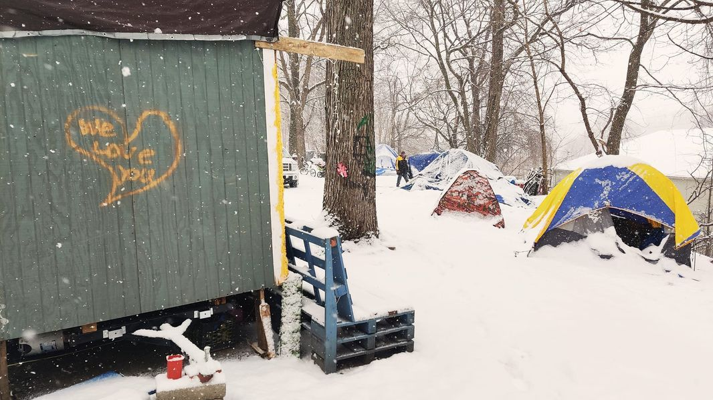

Mobile uploads
Years ago, I would feel sadness that this was all I could provide for my friends. Today I understand that society always has people they consider the enemy. Native Americans, blacks, Jews. Homeless people have always been on that list and are still hated today.
So today my heart is filled with joy that we quietly sit in our little tents in a hidden yard in a very low income neighborhood living in peace and quite. While we all know that the wolf is coming. He might not come today. He might not come tomorrow. But he is stalking us waiting to destroy us. The wolf is these people's own government.